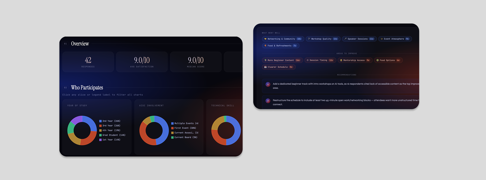
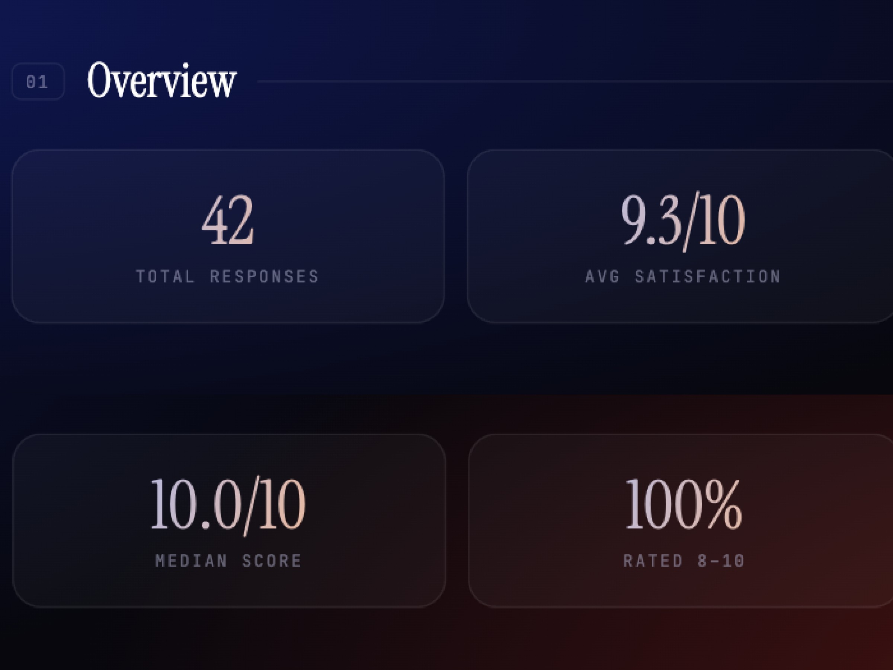
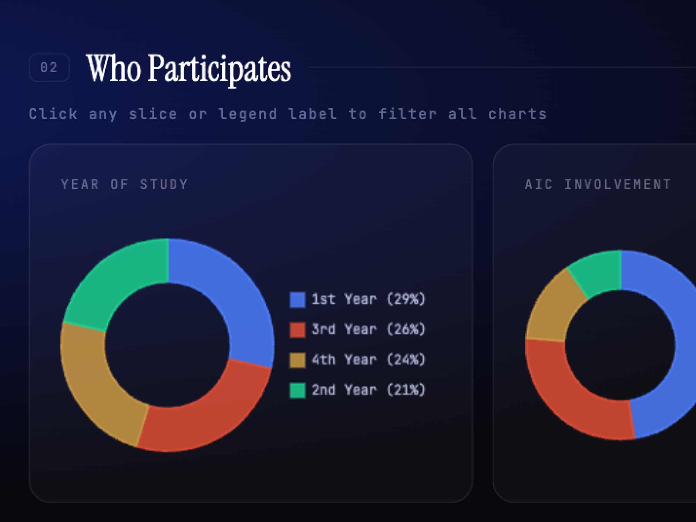
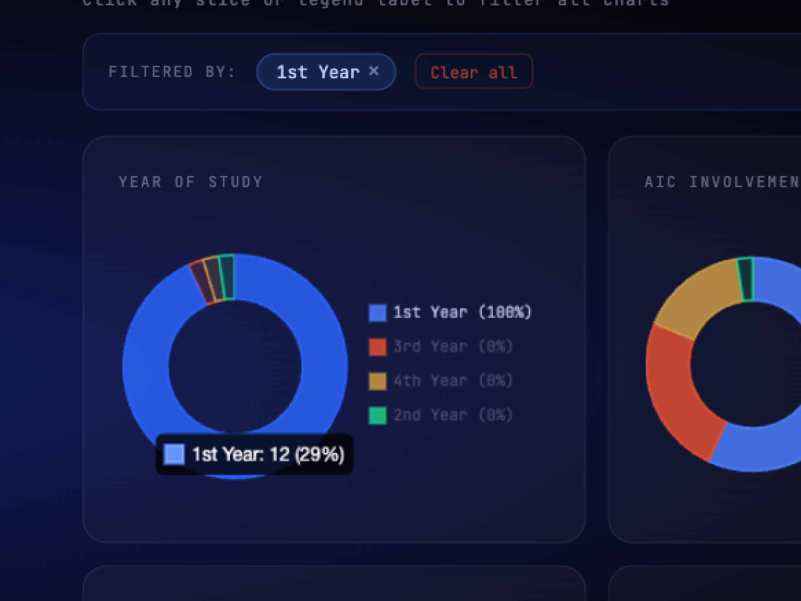
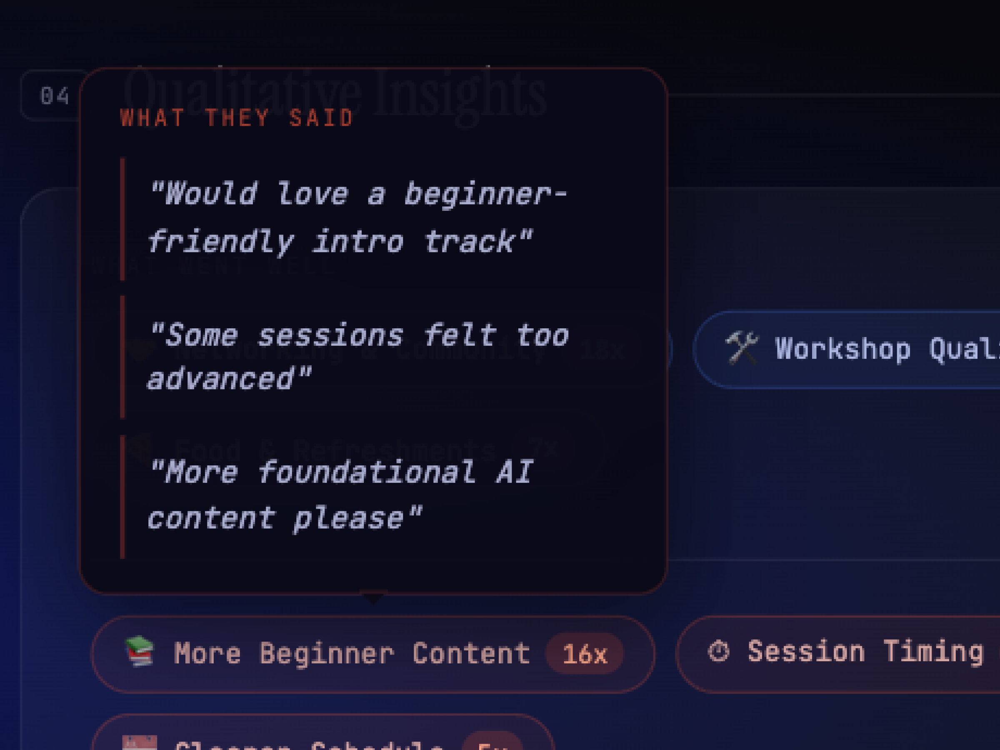

I grew from research associate to leading the UX team within my first year at The AI Collective, an org that runs 6–7 events per quarter, serving anywhere from 20 to 300 people. The problem was that leadership had no info on who these people were, what brought them to events, and if the org was growing at all.
So I built the system to change that. My key contributions:
Defined the member hierarchy, scoped the metric framework, and designed the survey instrumentation from scratch, creating the first consistent data system the org ever had.
Interviewed leadership and event leads to map their distinct needs, synthesized qualitative and quantitative responses across every event, and presented findings to a 40-person leadership board for a years worth of events.
Identified the analysis bottleneck, scoped and built the AI feedback tool solo, and deployed it on Vercel, replacing hours of manual review with instant structured summaries. Live at aic-events.vercel.app.
We had no formal definition of membership: a first-time attendee and a year-long division lead were both "members." Without drawing clear lines, any data we collected would be meaningless.
After interviewing key leadership, we established three distinct tiers:
Responsible for org strategy and event programming. Their high buy-in posed a bias risk for honest event satisfaction data, instead their responses could be a reliable internal measure of leadership engagement and org health over time.
Committed members with ongoing roles inside AIC divisions for the quarter. More invested than general attendees, but rotating each quarter, making their feedback a key signal for whether members are choosing to re-engage and potential involvement pipelines.
The most numerous and most invisible group. Most important group to measure: reach (are we growing beyond our core?), inclusivity (are we attracting people from different backgrounds and skill levels?), and accessibility (are our events actually open to first timers?).
This hierarchy became the backbone of the entire system. It informed which survey questions to ask, which metrics to prioritize, and how to filter the data. It also clarified something important: AIC has no static roster, membership is defined by showing up, which made event-level data our most informative unit of analysis.
Designing the survey meant balancing three competing pressures: data quality, respondent comfort, and actionability. AIC is a volunteer org with no incentive budget beyond food. Attendees wanted to feel heard, not interrogated. Every question had to justify itself.
I chose Google Forms, free, QR-accessible, no login required, and it fed directly into our Google Drive ecosystem. Then I worked through each question with a clear rationale:
Allows longitudinal tracking and response validation while giving respondents some leeway to be anonymous if desired, unlike requiring logging-in.
Included "5th year+," "Grad Student," and "Other" with a fill-in. Non-traditional students aren't erased from the data while keeping it quick.
Started as free-response but analysis was inconsistent and cross-event comparison was impossible. Instead used the official UC Davis major list to keep it standardized.
Enabled retention tracking and engagement-level segmentation. Allows us to filter by the membership tiers defined earlier and pay attention to specific metrics per group.
Clean quantitative baseline. Comparable across every event and member group over time. Simple enough that respondents didn't overthink it.
Kept optional to reduce survey fatigue. Still captures qualitative signal from the most engaged respondents, the people who have something specific to say will say it.
One more thing that made a real difference: timing.
Early response rates were low because surveys competed with people packing up and leaving. Moving distribution to mid-event, before food service or even sometimes required for food, turned completion into a natural part of the event flow. Response rates became consistent across every event after that.
With the hierarchy established, three questions anchored every metric: Are we actually growing beyond our core? Are we serving all member types equally? and Are the people we think we're reaching actually showing up? Four categories emerged.
Total attendees, repeat rate, new vs. returning ratio. Tracked whether the org was growing reach or serving the same core group.
Role, year, major, technical skill level. Gave context to who was in the room and whether AIC was reaching beyond its immediate community.
1–10 satisfaction score, post-event confidence, open-ended feedback. Measured perceived value and surfaced specific improvements.
How attendees heard about the event. Connected outreach efforts to actual attendance, identifying which channels were working.
After every event, someone on the UX team had to manually read through 50+ responses, pull themes, calculate satisfaction scores, and put together a full slide deck. We could do event-level analysis and quarter-level summaries but each one took hours and landed a week late. View Winter Quarter Presentation →
The insights existed. They just weren't accessible in time to matter.
The real bottleneck wasn't the data. It was the analysis layer between the data and the decision. If I could automate that layer with AI, leadership could go from raw CSV export to structured insights in minutes, no manual review, no delay.
Built solo. Claude API backend, deployed on Vercel, live at aic-events.vercel.app. Not my background. Figured it out anyway. But the harder problem was never the code. It was knowing what leadership actually needed to see.
The first version returned a raw text block. It worked, but leadership still had to read everything to find what mattered. Same problem as before. So I went back to what I knew from a year of delivering manual slide decks: quantitative snapshots got attention, buried qualitative text got skimmed, anything over two minutes got ignored. That became the design spec
Claude handles response synthesis and qualitative analysis. React renders the dashboard. Vercel hosts and deploys. The full pipeline runs in under 60 seconds from CSV upload to structured output.
No formatting required. Leadership uploads the direct export from the event feedback form and the tool handles the rest from parsing, analysis, to rendering.
Three sections in a fixed order: the four key stats first, demographic breakdowns second, AI-synthesized qualitative themes third. Each section answers a specific question leadership was already asking.
Upload a CSV → AI generates quantitative summary + demographic charts + qualitative themes in under a minute
Every metric, chart, and interaction in the tool was a conscious product choice. The question I kept returning to: what does leadership actually need to see, and in what order?
Total responses tells you how big the event was. Average satisfaction tells you how most people felt. Median score removes outlier skew. And percentage rated 8–10 measures against an explicit org goal. These four numbers replaced the entire manual summary for a quick read.


Previously, someone manually combed through raw responses to report participant splits. The five dimensions — year, AIC involvement, technical skill, major distribution, and how they heard — were chosen because they map directly to the org's open questions about reach, inclusivity, and accessibility.
Individual charts tell you what happened. Filtering lets you ask why. Did first-year students with low technical skill rate the event differently than returning members? You can find out in one click instead of building a pivot table, instantly surfacing cross-patterns to ensure demographics are being served equally.


The first version surfaced key themes, synthesized and skimmable. But in a 1-1, leadership said they wanted to know why a theme appeared, the way we used to share raw quotes in manual updates. So I iterated on the prompt to surface supporting quotes beneath each theme and generate recommendations with explicit rationale. Three layers: theme, evidence, action.
Understanding the problem is only half the work. Building the tool that actually closed the gap meant the research finally mattered to the people it was for, not just the team that did it.
Spending time early defining who counts as a member unlocked every downstream decision. Skipping that step would have meant analyzing noise.
A year of delivering post-event decks taught me more about the tool's requirements than any requirements doc would have. The output format came directly from those observations.
Glad we could cross paths.
I hope it left you with a bit of curiosity.